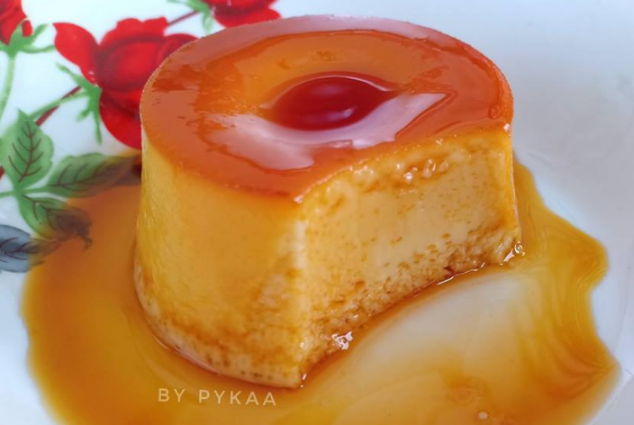

Hello guys saya bukan Khairul Aming
Pudding Caramel here we go!!

Bahan-bahan
Bahan gula karamel
1/3 cawan gula
2 sudu besar air
Bahan adunan puding
2 cawan susu full cream
1/2 cawan gula
1 sudu kecil esen vanilla
4 biji telur saiz B
1 kuning telur
secubit garam
Cara Memasak
Untuk lapisan karamel
Masak gula dengan air sehingga gula cair dan naik buih.
Apabila sudah keperanganm masukkan gula caramel dalam loyang dan ratakan karamel pada permukaan loyang.
Untuk puding karamel
Kacau perlahan telur dan kuning telur, lalu masukkan esen vanilla.
Masak susu full cream, gula dan secubit garam. Masak sehingga naik asap, berbuih sedikit dan tidak perlu masak sehingga mendidih.
Tuang adunan susu suam kedalam telur sedikit demi sedikit sambil mengacau perlahan adunan.
Tapis adunan puding, lalu tuangkan kedalam loyang lapisan karamel dengan perlahan.
Tutup loyang dengan aluminium foil, dan masak puding karamel samada dengan cara mengukus atau membakar.
Bagi kaedah water bath dan bakar, masukkan loyang kedalam loyang yang lebih besar lalu tuang air panas kedalam loyang besar.
Bakar puding karamel pada suhu 160˚ dalam anggaran selama 50 minit.
Kemudian, sejukkan dalam peti sejuk dalam beberapa jam ataupun semalaman.Resepi Puding
Lorekkan bahagian tepi puding lalu terbalikkan puding karamel untuk dihidang.
 Ayam Masak Merah
Ayam Masak Merah